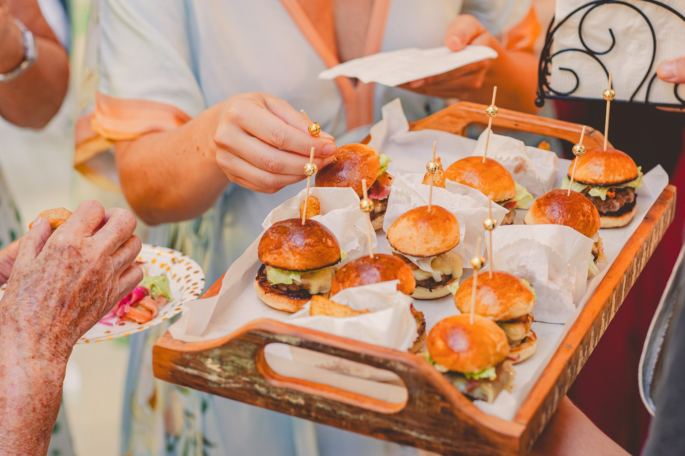

Nossa História
Fundada em 2016, a Sal de Flor – Cozinha Criativa nasceu do desejo de oferecer uma gastronomia diferenciada para eventos de todos os portes, sempre valorizando ingredientes de qualidade, atendimento personalizado e apresentações que encantam.
Ao longo de sua trajetória, a empresa realizou centenas de eventos na Grande Florianópolis, além de atender clientes em outros estados, levando uma culinária autoral que une sabor, criatividade e sofisticação.
Cada evento é planejado de forma exclusiva, respeitando o perfil dos anfitriões e proporcionando experiências memoráveis para todos os convidados.

Missão, Visão e Valores
Missão
Proporcionar experiências gastronômicas memoráveis, oferecendo atendimento personalizado, qualidade e criatividade em cada evento.
Visão
Ser reconhecida como referência em buffet e gastronomia criativa na Grande Florianópolis, destacando-se pela excelência e inovação.
Valores
Ética, compromisso, qualidade, criatividade, respeito aos clientes e dedicação em cada detalhe dos eventos realizados.